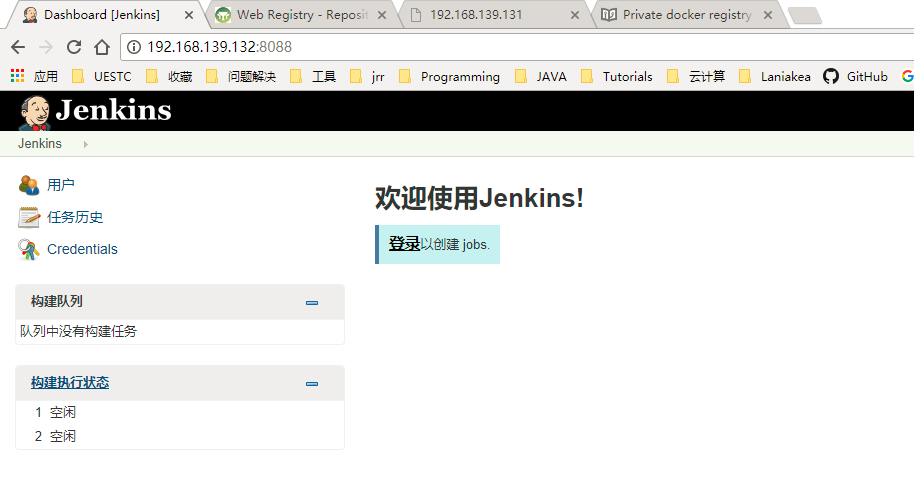

Jenkins master节点部署
获取Jenkins镜像
从官方DockerHub上拉取Jenkins镜像：
root@ubuntu:/# docker pull qinyu/jenkins
Using default tag: latest
latest: Pulling from qinyu/jenkins
cfc728c1c558: Pull complete
5b12b87f0a0e: Pull complete
b7d6497a92f9: Downloading [========> ] 12.24MB/70MB
7c6644ff6c63: Downloading [================> ] 8.09MB/25.25MB
48973060083e: Download complete
af01d2ab7c3e: Download complete
aebc5599e186: Download complete
e38dd7110c4f: Download complete
141c7a122953: Downloading [=> ] 2.135MB/72.74M
镜像使用方法
- 设置管理员帐号密码（下面例子用户名和密码都是
admin，可以自己调整）
root@ubuntu:/# echo "admin" | docker secret create jenkins-user -
vtukek9s2qqhaaief1gd9ybc2
root@ubuntu:/# echo "admin" | docker secret create jenkins-pass -
mhufs3gua7yt0th8fgm5xlqli
- 创建jenkins.yml文件：
version: '3.1'
services:
main:
image: qinyu/jenkins:latest
ports:
- 8088:8080
- 50008:50000
volumes:
- /home/jrr/jenkins-mnt:/var/jenkins_home
- /var/run/docker.sock:/var/run/docker.sock
secrets:
- jenkins-user
- jenkins-pass
secrets:
jenkins-user:
external: true
jenkins-pass:
external: true
- 使用docker stack部署服务（配置见jenkins.yml，如有必要可以修改 volume /var/jenkins_home的挂载路径）
root@ubuntu:~# docker stack deploy -c jenkins.yml jenkins_ci_cd
Creating network jenkins_ci_cd_default
Creating service jenkins_ci_cd_main
root@ubuntu:~# docker stack services jenkins_ci_cd
ID NAME MODE REPLICAS IMAGE PORTS
rycy7rhssomk jenkins_ci_cd_main replicated 1/1 qinyu/jenkins:latest *:8088->8080/tcp,*:50008->50000/tcp
root@ubuntu:~# docker ps
CONTAINER ID IMAGE COMMAND CREATED STATUS PORTS NAMES
948ba8ce9806 qinyu/jenkins:latest "/bin/tini -- /usr..." 3 minutes ago Up 3 minutes 8080/tcp, 50000/tcp jenkins_ci_cd_main.1.r28yjkykxi3pstvzdqomk67e9
- 验证Jenkins master节点启动，在浏览器访问 http://192.168.139.132:8088/：
其他补充
Docker在1.12版的引擎中内置编排能力，也就是 Swarm Mode，在容器之上引入了服务(service)的概念，也实验性的推出了应用栈(stack)来支持多服务应用的部署管理。但是 Docker 1.12 版本，服务的开发和操作缺乏类似Docker Compose工具的支持，而且由于Docker Compose v1/v2是面向容器编排设计，和Swarm Mode中的概念上有很多不同。只可以用 docker-compose bundle 命令将已有 docker-compose.yml 转换为 Distributed Application Bundle 才能在Swarm mode中部署，非常不便，而且更为严重的是很多功能不支持，导致很多现有编排模板无法直接使用。
在2017年1月发布的 Docker 1.13版本中，Swarm mode迅速成熟，相应的工具支持也进一步完善。 Docker Composev3 规范，已经全面支持 Swarm mode 概念。而且从 1.13 开始，Docker 命令行工具支持直接使用 v3 版本的 docker-compose.yml 文件来进行应用栈(stack)部署管理，这大大简化了容器编排使用的复杂性。
| Docker Compose v1/v2 | Docker 1.13 | |
|---|---|---|
| 启动服务 | docker-compose up -d | docker stack deploy --compose-file=docker-compose.yml |
| 伸缩服务 | docker-compose scale xxx=n | docker service scale xxx=n |
| 停止服务 | docker-compose down | docker stack rm |
| 跨宿主机 | 否 | 是 |